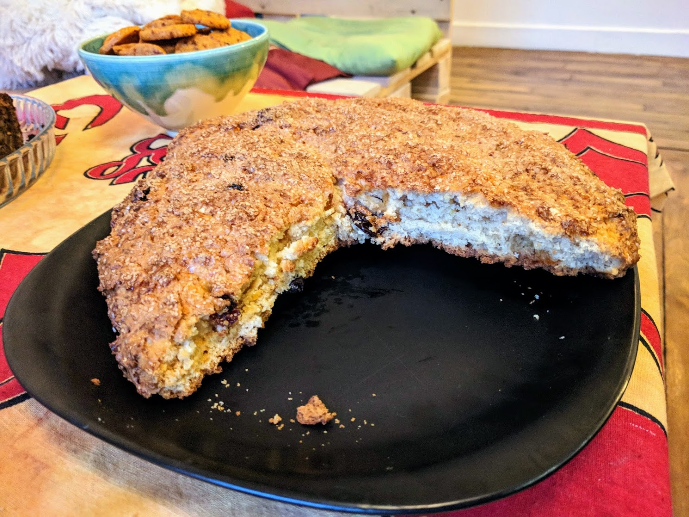

Méga-scone enthousiasmant

Pour un méga-scone nourrissant une dizaine de personnes :
- 350g de farine
- 60g de sucre
- 18g de levure
- 360g de crème épaisse
- 85g de raisins secs blonds
- Deux citrons jaunes (on n'utilisera que le zeste)
- Un jaune d'œuf
- Une cuillère à soupe de cassonade (ou un peu plus de sucre, au pire)
- Mélanger tout ensemble, à part le jaune d'œuf et la cassonade. Je préfère prévenir, la consistance obtenue n'est pas franchement appétissante (ou bien, c'est juste moi qui ne supporte pas de manipuler de la crème comme ça).
- Étaler la pâte sur du papier sulfurisé, en formant un disque de deux centimètres d'épaisseur environ. Mettre au réfrigérateur pendant une heure.
- Préchauffer le four à 170°C. Étaler le jaune d'œuf sur la surface de la pâte, puis saupoudrer avec de la cassonade.
- Enfourner une heure, servir tiède, par exemple avec de la confiture.
Retour à la liste des recettes